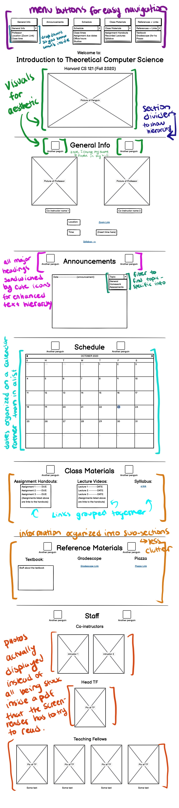
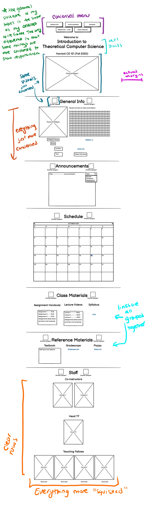
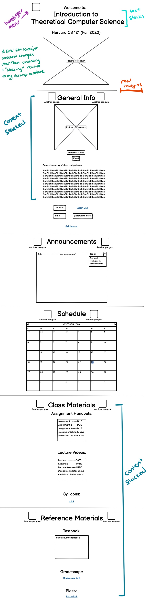
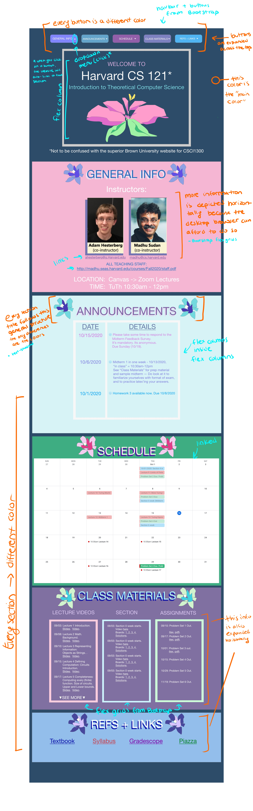
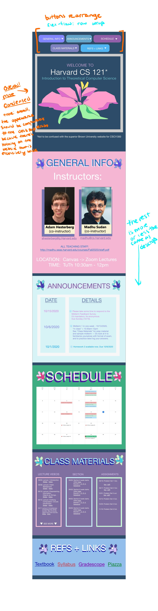
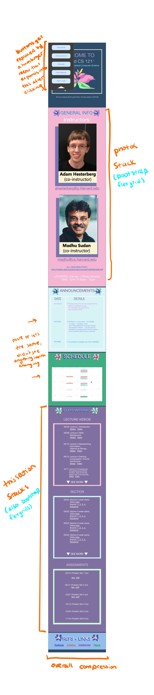

Finding Usability Problems

What I see as usability issues:
- Difficult to make out a text hierarchy because the differences between text sizes are too small
- Not really sure what the different colors stand for, specifically the dark and light blue
- A lot of information that isn't sectioned enough, makes it difficult to find specific information
- Could use some pictures to make it more visually appealing
- Not super clear what is interactive (clickable) and what isn't
- In the mobile and tablet versions, there are no margins or padding so the text just extends all the way to the edges of the screen and are difficult to read
What WebAIM WAVE sees as usability issues:
- No language assigned
- 28 contrast errors
- The structure is composed of 1 header and 8 unordered lists
What the screen reader sees that can be interpreted as usability issues:
- There are so many links that it reads out which is really uneccessary and breaks the flow of information
Lo-Fi Wireframes
Here are the annotated wireframes I made in Balsamiq using the data I gathered above:
Note* Unless explicitedly stated otherwise, all annotations made in my desktop wireframe carry over to my tablet and mobile wireframes as well
Desktop

Tablet

Mobile

Hi-Fi Wireframes
Here are the annotated prototypes I made in Adobe XD using my wireframes as a rough outline and inspired by the CSCI1300 website at Brown University. Note the many structural changes that were made in response to the information that was actually available on the original website
Desktop

Tablet

Mobile

Visual Design Guide
Here is the visual design guide that displays the overarching design patterns I utilized